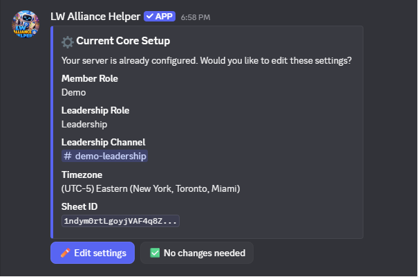
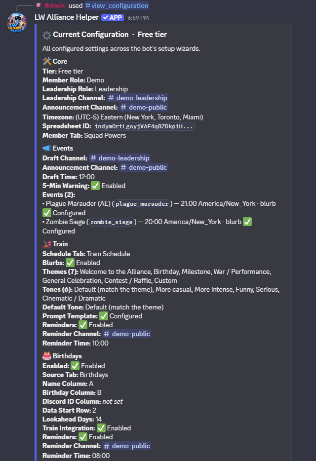

Setup Guide
Everything you need to get LW Alliance Helper running in your server, from inviting the bot to configuring each individual feature. New here? Start at Before You Start and work down, or jump to a specific feature setup if you've already done the basics.
Before You Start
You'll need:
- A Discord server where you have Administrator permissions
- A Google Sheet: this is where all your data lives. One sheet per alliance, shared with the bot's service account (details below)
That's it. No coding, no Google Cloud setup. Just a sheet and a Discord server.
Inviting the Bot
Use the provided button to invite the bot to your server. When prompted, select your server from the dropdown and click Authorise.
Once the bot has joined, you'll see it appear in your member list. It won't do anything until you run /setup.
Setting Up Your Google Sheet
Before running /setup, create a new Google Sheet. You don't need to add any tabs or columns yet. The bot will tell you what to create as you go through each feature's setup.
The one thing you need to do upfront is share your sheet with the bot's service account so it can read and write data. You'll be prompted to do this during /setup with a direct link to your sheet's sharing settings and the exact email address to use.
Set the permission to Editor when sharing.
🗂️ Your Sheet is where your alliance's data lives. Every piece of alliance data (power scores, growth snapshots, train history, participation logs, member roster) is written to your Sheet, on your Google account. The bot doesn't keep its own copy. If you ever stop using the bot, revoke the service-account share and you keep everything. See Where Your Data Lives for details.
Keep your Sheet ID handy. You can find it in your sheet's URL:
https://docs.google.com/spreadsheets/d/YOUR_SHEET_ID_HERE/edit
The Setup Hub
Everything starts at /setup. The first time you run it, the bot walks you through Core Setup (the essentials every feature depends on). After that, /setup opens a hub where you can pick any feature to add, edit, or disable, plus a few housekeeping buttons:
- "View Configuration": print every wizard's saved answers in one place, so you can see your alliance's full bot setup at a glance.
- "📢 Release announcements: ON / OFF": toggle whether the bot posts a short summary embed to your leadership channel each time a new major or minor version of LW Alliance Helper ships. On by default; click the button to opt out at any time.
- "Reset": clear your server's bot configuration and start over from scratch.
The hub is open to anyone with the leadership role or Discord Administrator permission, so a server owner can get a new install configured even before holding the leadership role themselves.
Core Setup
On a brand-new install, /setup jumps straight into Core Setup. It covers the essentials every feature depends on:
- Member role: the role all alliance members have. Used to gate the survey.
- Leadership role: the elevated role for alliance leadership. Required to use most commands.
- Leadership channel: the private channel where commands are used and drafts appear.
- Timezone: your alliance's local timezone. Used for all event times, reminders, and Desert Storm/Canyon Storm time displays throughout the bot.
- Google Sheet ID: paste the ID from your sheet's URL.
- Sheet sharing: a guided step to share your sheet with the bot's service account.
Once complete, the bot drops you on the hub so you can pick whichever feature wizard to run next.
Tip: You can run
/setupagain at any time to re-open the hub and edit any saved setting. Every wizard shows your current answer and lets you Keep current or change it.


/setup hub any time to see every wizard's saved answers in one place.Feature Setup
Each feature is configured independently. Set up only what you need. Features you don't configure simply won't be active. Open /setup and click the button for whichever feature you want to add or change.
📣 Event Announcements
/setup → "📣 Events" for shared settings · /events for the per-event hub
What to create in your sheet: Nothing required for this feature.
Open /setup and click "📣 Events" to configure the four settings that apply to every event:
- Draft channel: where leadership sees the draft before it goes public
- Announcement channel: where the final approved announcement posts
- Draft posting time: when the draft is posted each event day
- 5-minute warning: whether the bot auto-posts a warning before events start
Once those four are saved, run /events to manage individual events. The hub shows your current event list plus a button grid:
- "📅 Today's events" opens the draft editor for the next event day, ready for approval.
- "📆 Upcoming events" shows configured event types plus their next firing dates at a glance.
- "📜 Event log" shows recent approved announcements (free tier: 7 days, 💎 Premium: 30 days).
- "➕ Create an event" opens a two-path wizard:
- 🎯 Pick a preset: pick from a curated list (Alliance Exercise variants by game stage, Zombie Siege, Glacieradon, Sky Predator). The preset prefills the name plus a cycle suggestion; you still pick the schedule, anchor date, and time.
- ✏️ Define my own: the full free-text wizard for alliance-internal events, regional themes, or anything outside the canonical list.
- "🗑️ Delete an event" removes an event from the schedule.
For each event you create, the wizard asks for:
- Event name (e.g.
Plague Marauder (AE),Zombie Siege) - Default time: when this event usually starts, in your timezone
- Schedule: 🔁 Repeating (with anchor date and interval) or 📅 Manual (for events you run ad-hoc and add to the schedule by hand)
- Announcement blurb: the message posted when this event fires, using
{time}and{server_time}as placeholders
Example blurb:
Plague Marauder (AE) at {time} ({server_time} Server Time). Make sure to have offline participation checked!
🚂 Train Schedule
/setup → "🚂 Train"
What to create in your sheet: A tab for your train schedule (e.g. Train Schedule).
Open /setup and click "🚂 Train". The wizard walks through 9 steps:
- Schedule tab: which tab in your sheet stores the train schedule
- Blurb generation: whether you want the bot to generate a ChatGPT prompt each day. If no, steps 3 through 6 are skipped.
- Themes: a list of themes leadership can choose from (e.g.
Birthday, Milestone, Welcome) - Tones: a list of tone options (e.g.
Default, More casual, More intense) - Default tone: which tone is pre-selected
- Prompt templates: saved ChatGPT prompts using
{name},{theme},{tone}, and{notes}as placeholders. Free tier keeps a single "Default"; 💎 Premium can save up to 10 named templates and pick the default. - Reminders: whether the bot should post a reminder when someone is assigned the train, and if so, which channel and what time
- 💎 Train DM body: for Premium guilds with Member Sync, the bot also DMs the assigned member directly when their train day comes up. You can customise that DM's wording with
{name}as a placeholder, or use the bot's default. Free guilds can configure this now; it just won't fire until you upgrade. - Conductor Rotation (optional): turn on automatic conductor drafting, or skip it to keep the classic add-by-hand schedule. If you turn it on, sub-steps cover your roster source (which tab and name column the conductor pool comes from on the free tier, or 💎 your synced Member Roster), the rotation post channel, post time, weekly draft day, whether to also post the day's conductor publicly, and 💎 optional role-scoped days. See the dedicated section below for what rotation does day to day.
Day-to-day use:
- Run
/trainany time to open the train hub. The buttons change depending on whether Conductor Rotation is on (see below); in classic mode you get "📋 Schedule overview" (with "Add", "Update", "Generate Prompt", and "Clear"), "📜 Prompt log", and "🎂 Run birthday check". - At your configured reminder time, the bot posts a reminder in your chosen channel. If blurb generation is enabled, a button lets you pull up the ChatGPT prompt instantly.
- Use the "🎂 Run birthday check" button (classic mode) to add upcoming birthdays to the schedule whenever you've added a new birthday and don't want to wait for the next nightly run.
🔁 Conductor Rotation (optional)
Turn on Conductor Rotation in train setup and the bot drafts each day's conductor for you instead of you assigning by hand. It picks fairly: members who have driven fewest come first, ties broken by who drove longest ago, then a stable daily random pick so the same name doesn't always win a tie. The conductor pool comes from a roster tab you point it at; on the free tier that's just a name column, with no Discord IDs needed.
- Schedule presets define the weekly pattern (which days auto-rotate, which are reserved for a role). Manage them from the "📅 Schedule presets" button.
- 💎 Per-day role-scoped rules (Premium) can pin a day to a specific Discord role, for example Leadership, VS, Contest, or Event days, so only those members are in the running that day. On the free tier every day rotates the full roster, and a lapsed subscription falls back to that rather than leaving role days unassigned.
- Per-member rules (the "👤 Member rules" button) skip a member for a stretch or opt them out entirely.
- A weekly draft posts for leadership to review, with ◀ / ▶ week navigation and per-day reassign / skip / regenerate. A daily confirmation posts before the conductor goes public.
- Fairness counts your whole Train History sheet, so back-filling past drives is just adding rows. Each drive records the conductor's Discord ID, so a member who changes their display name keeps one fairness record.
🎂 Birthdays
/setup → "🎂 Birthdays"
What to create in your sheet: A tab containing your member roster with name and birthday columns (e.g. Birthdays, or your existing member tab).
Open /setup and click "🎂 Birthdays". The wizard walks through 9 steps:
- Enable birthday tracking: opt in or skip the feature entirely
- Sheet tab: which tab contains birthday data
- Name column: the column letter containing member names (e.g.
A) - Birthday column: the column letter containing birthdays (e.g.
B) - Train integration: whether birthdays are automatically added to the train schedule. If no, steps 6 and 7 are skipped.
- Birthday placement: exact birthday only, or allow 1 day before/after if the birthday is taken
- Train schedule lookahead: how many days in advance to look ahead (default
14) - Birthday reminders: whether the bot posts a birthday message in Discord, and if so, which channel and what time
- 💎 Birthday DM body: for Premium guilds with Member Sync (and a Discord ID column wired up in the birthday sheet), the bot also DMs the member directly with a personal note. Customise that DM's wording with
{name}as a placeholder, or use the bot's default. Free guilds can configure now; it just won't fire until you upgrade.
Birthday messages say: 🎂 Today is [name]'s birthday!
If train integration is on, birthdays auto-populate the train schedule once per day, just after server-time midnight. To trigger the check on demand when you've just added a birthday, open /train and click "🎂 Run birthday check" (classic mode).
🤝 Profession Buddy System
/setup → "🤝 Buddy System" for configuration · /buddy for the hub
What to create in your sheet: A tab listing each member's profession (War Leader or Engineer). The bot reads it; you don't need a particular layout beyond a name column and a profession column.
Pair your War Leaders with Engineers so everyone knows who repairs for whom. Members look up their buddy any time. Open /setup and click "🤝 Buddy System". The wizard walks through 7 steps:
- Enable: turn the Buddy System on or off
- Buddy list tab: which tab in your sheet holds professions and pairings
- Engineer doubling: whether one War Leader can be assigned two Engineers when Engineers outnumber War Leaders
- Scarcity priority: when Engineers are scarce, who gets one first, your strongest War Leaders or alphabetical order
- Reliability ranking (optional): keep a 1-5 score column in your sheet and the bot pairs your most reliable Engineers with your strongest War Leaders. Sub-step 5a points the bot at the tab and column holding the scores (Keep current / Use default / pick your own).
- Leadership alerts: an optional channel where the bot posts a heads-up when pairings change
- 💎 Buddy DMs: for Premium guilds with Member Sync, the bot DMs members when their buddy changes. Customise the wording with
{name},{buddy}, and{buddy_role}placeholders, or use the default. Free guilds can configure now; it just won't fire until you upgrade.
Day-to-day use:
- Members run
/buddyand click "🔍 Who's my buddy?" to see their pairing, or "📋 View buddy list" for the full list. - Leadership uses "✏️ Manage pairings" to edit by hand, "🔄 Refresh from sheet" to pick up edits made directly in the sheet, and "📤 Post buddy list" to share it in a channel.
- (💎 Premium) "🪄 Auto-assign" pairs everyone automatically, "♻️ Re-pair from scratch" rebuilds every pairing, and "📌 Post self-service buttons" lets members update their own profession with one click.
⚔️ Desert Storm
/setup → "⚔️ Desert Storm"
What to create in your sheet: A tab for Desert Storm assignments (e.g. DS Assignments). If you opt in to the Premium storm workflow, the bot will also create sign-up, roster, and attendance tabs automatically.
Open /setup and click "⚔️ Desert Storm". The wizard walks through 8 steps, plus an optional 💎 Premium add-on flow described below:
- Sheet tab: the bot manages the data structure here automatically, no formatting needed. Defaults to your Member Sync roster tab when Member Sync is configured, so storm and roster reads share the same source.
- Teams: whether you run Team A & B, Team A only, or Team B only
- Team time slots: pin which game-defined time slot each team runs at. Both teams can share a slot. The saved default carries the common case, and the "📣 Post sign-up poll" button opens a one-week override step so leadership can swap the mapping without touching setup.
- Log channel: where participation log summaries are posted after each event
- Post channel: where the finished mail is posted when leadership clicks "✅ Looks Good: Post & Copy" on the Generate mail flow
- Mail template: if you run both teams, choose one template for both or separate templates per team. A default template is provided; use it as-is or paste your own.
- Participation tracking (optional): opt in to log each event's participation. You define the questions yourself and where the bot reads member names from. Sub-steps cover the sheet tab to write rows to, the roster source (tab + name column + the shared Alias Column + first data row), a preset-template picker (3 free + 3 💎 Premium ready-made question sets), and a questions builder. Free tier supports up to 3 questions across
Text,Yes/No,Numeric,Roster names, andRoster multi-select(manual). 💎 Premium unlocks unlimited questions plusSingle-select,Multi-select,Date,Derived count(counts past events per member), and the Discord-poll auto-prefill variant of Roster multi-select. Per-member question types feed a separate<DS|CS> Member Logtab keyed by (event date, member) that powers the Trends Viewer. - 💎 Reminder DM body: when leadership clicks "🔔 Send DM reminder to roster" on the
/desertstormhub, the bot DMs every roster member this message. Customise it with{name}as a placeholder, or use the bot's default. Stored separately for DS and CS so each event type can have its own copy. Free guilds can configure now; it just won't fire until you have Premium + Member Sync.
Available placeholders in your mail template:
{alliance_name}: your alliance name{zones}: zone assignments block{subs}: substitute members{time}: event time (auto-filled when drafting)
💎 Premium storm workflow (optional add-on)
If your alliance has Premium, the Desert Storm wizard offers an opt-in to the full sign-up & roster workflow. Picking yes adds a short sub-flow that asks:
- Sign-up channel: where the weekly sign-up poll posts. Members click "I'm in" (or sign up on someone else's behalf if you give them the on-behalf voting toggle).
- Auto-schedule: optionally pick a weekday and time and the bot will post the sign-up poll automatically each week. Skip this and post manually any time with the "📣 Post sign-up poll" button on
/desertstorm. - Sheet tabs: where the bot writes sign-ups, weekly rosters, and post-event attendance. Created automatically if they don't exist.
- Power Data Source: pick the tab and column the bot reads each member's power from when balancing the roster. Defaults to your Member Sync roster, but you can point it at any tab in your sheet (e.g.
Squad Powersfrom the Squad Power Survey) without copying data around. - Per-member assignment DM templates: customise the DMs the bot sends each rostered member after "Approve & Post". Three templates per event type, one per role: Starter (with their zone assignments), Paired Sub (with their primary), and Pool Sub. Defaults provided; edit any of them to match your alliance's voice.
Once enabled, the /desertstorm hub lights up extra buttons: "👁️ View sign-ups + set up teams" (officer view with the roster builder and Auto-fill button), "📋 Record attendance", "🔍 View trends across events" (Per-Member Log queries), "📜 View past rosters", plus "🧮 Manage strategy presets" and "👤 Manage member rules" for setting per-zone power floors and per-member roles. "Approve & Post" produces both an image-rendered team roster and the in-game mail text, posts to your post channel, and DMs each rostered member their personal assignment.
Day-to-day use:
- Open
/desertstormany day to see your alliance's current Desert Storm configuration and a button grid for every action. - Click "📄 Generate mail" to walk the draft flow: "Pick Team" → "Pick Time" → "Mail Template" ("Use as-is" or "Edit") → "Preview". At the preview step, "✅ Looks Good: Post & Copy" posts the mail to your configured post channel and prints a copyable code block in leadership.
- After the event, click "📊 Fill out participation questions" to walk through your configured participation questions. The flow asks for the date first, then steps through each question you defined in setup. The summary auto-posts to your log channel.
- Click "📜 View past participation logs" to look up past entries. 💎 Premium gets unlimited lookback; free tier sees the 4 most recent.
- (💎 Premium) Click "📣 Post sign-up poll", "👁️ View sign-ups + set up teams", "📋 Record attendance", "🔍 View trends across events", "📜 View past rosters", "🧮 Manage strategy presets", or "👤 Manage member rules" for the full storm workflow.
🏜️ Canyon Storm
/setup → "🏜️ Canyon Storm"
What to create in your sheet: A tab for Canyon Storm assignments (e.g. CS Assignments). The Premium storm workflow also creates sign-up, roster, and attendance tabs automatically if you opt in.
Open /setup and click "🏜️ Canyon Storm". The setup is identical to Desert Storm above (8 steps including Team Time Slots, Post Channel, optional participation tracking with preset templates, and an optional 💎 Premium reminder DM body). It also offers the same 💎 Premium storm workflow opt-in: sign-up channel, auto-schedule, sheet tabs for sign-ups, rosters, and attendance, Power Data Source, and per-member assignment DM templates.
Canyon Storm event times vary by server, so the bot doesn't bake in a fixed schedule. Your alliance's storm times come from your own calendar.
Day-to-day use:
- Open
/canyonstormfor the event hub (same button grid as Desert Storm). - Click "📄 Generate mail" to walk the Team → Time → Template → Preview flow, then "✅ Looks Good: Post & Copy".
- Click "📊 Fill out participation questions" after the event to walk your configured questions; the summary auto-posts to your log channel.
- Click "📜 View past participation logs" to look up past entries.
- (💎 Premium) Use the sign-up, roster builder, attendance, and history buttons throughout the week.
📋 Survey
/setup → "📋 Survey"
What to create in your sheet: Two tabs, one for current member stats (e.g. Squad Powers) and one for submission history (e.g. Survey History).
Open /setup and click "📋 Survey" to configure the default survey:
- Survey channel: where the survey button is posted for members to access
- Notification channel: where leadership is notified when a member submits
- Stats tab: updated with each submission (one row per member)
- History tab: a timestamped record of every submission
- Intro message: the message members see before starting the survey
- Questions: choose from the default Last War question set, edit individual questions, or build your own from scratch
The question builder supports three question types on the free tier:
- Text: the member types a value, with an optional help text hint
- Dropdown: the member picks from a list of options you define (up to 25)
- Numeric: a number, with a configurable scale so members can type natural shorthand (
301for 301M THP,43.27for 43.27M squad power) or paste the full in-game value (304,743,912); both work either way
💎 Premium adds two more question types: Multi-select (pick multiple options) and Date (formatted entry with strptime validation). It also unlocks min/max bounds on numeric questions for input validation.
💎 Multi-survey (Premium): alliances can configure more than one survey, each with its own questions, channel, intro, notification target, and reminder body. Manage everything from /survey overview. When Premium is active, the command renders a list of every configured survey along with "Add", "Edit", and "Remove" buttons. Adding asks for a display name and routes through the same setup wizard; editing covers both the default survey and any extras; remove deletes an extra (the default can't be removed).
Day-to-day use:
- Run
/survey postto post the answer button. Premium guilds with multiple surveys are prompted to pick which one. - Members click "📋 Answer", complete the survey in a private thread, and their data is saved automatically.
- Leadership sees a notification embed in the notification channel for each submission.
/survey remindis a hub command. Pick "Send now" to fire a reminder immediately, or "Manage scheduled reminders" to set up a recurring daily/weekly reminder for any survey. Free tier delivers via channel post; 💎 Premium adds DM-via-Member-Roster delivery.
📈 Growth Tracking
/setup → "📈 Growth"
What to create in your sheet: A tab for your member roster (can be the same tab used by the survey, or any other tab). The bot will create the growth output tab and the breakdown tab automatically if they don't exist.
Open /setup and click "📈 Growth":
- Enable: opt in to growth tracking
- Source tab: which tab contains your member data
- Data start row: which row your data starts on (usually row 2, after a header)
- Name column: the column letter containing member names
- Metrics: which columns to snapshot, each with a label and column letter. You can track as many as you want (e.g.
1st Squad Powerin column E,THPin column I) - Growth tab: where snapshots are written. Created automatically if it doesn't exist.
- Snapshot schedule: monthly on a specific day, or every X days
The growth tab will have a column per metric per snapshot period so you can see how each metric changed over time. From the second snapshot onward, every member's percent change is also classified into one of five buckets: Increased (≥ 20%), Steady (10 to 20%), Low (5 to 10%), None (0 to 5%), or Decline (< 0%). The classification is written to a separate Growth Breakdown sheet tab. Use /growth breakdown (or click "📊 See most recent Breakdown" on /growth overview) to see who is climbing and who is stalled at a glance.
Day-to-day use:
- Snapshots run automatically on your configured schedule.
- Use
/growth overviewto take a manual snapshot at any time. The status embed shows when the next scheduled snapshot will fire and offers a one-click "📸 Run Snapshot Now" button if you'd rather start tracking from today. - Use
/growth breakdown(or the button on/growth overview) to render the latest transition as an ephemeral embed grouped by metric and bucket. Read-only on free tier; auto-post + customisable thresholds and labels on Premium (see below).
💎 Growth Breakdown Customisation
/setup → "📊 Growth Breakdown"
Free for the read-only view; Premium for the auto-post and customisation. The bucket classification itself runs on every tier. /growth breakdown (and the matching button on /growth overview) reads the breakdown tab for any guild with growth tracking enabled. This wizard configures the Premium layer on top of that.
Open /setup and click "📊 Growth Breakdown" to configure:
- Breakdown tab: which tab in your sheet holds the breakdown data (default
Growth Breakdown) - Auto-post: yes or no. If yes, pick a channel where the bot posts the breakdown after every snapshot.
- Bucket filter: which buckets fire the auto-post (e.g. only Decline + None if you only want to hear about stalled members). Empty filter posts every bucket.
- Thresholds: keep the defaults (Increased ≥ 20%, Steady ≥ 10%, Low ≥ 5%, None ≥ 0%, Decline < 0%) or customise. Applies to every metric.
- Labels: keep the defaults or rename buckets to your alliance's voice (e.g. Crushing It, Stalled, Going Backwards)
Threshold changes only affect future transitions. Historical breakdown columns are frozen at the values that were in effect when they were written, so you can change your standards without rewriting your history.
🌟 Shiny Tasks
/setup → "🌟 Shiny Tasks"
What to create in your sheet: Nothing. This feature has no sheet integration.
Open /setup and click "🌟 Shiny Tasks" to configure a daily auto-post listing every Last War server in your transfer-eligible window that has shiny tasks today. The wizard walks through 6 steps:
- Enable: opt in to the daily post
- Announcement channel: where the post lands each day
- Server range: the minimum and maximum server numbers you can transfer to or from. Only servers within this window appear in the post.
- Post time: when the announcement fires each day, in your timezone
- Message template: keep the default or customise. Use
{servers}as the placeholder for the server list. - Confirm & save: a final review embed shows your settings; click confirm to save and the first post will fire at the next configured time
The 3-day shiny-task cycle is derived from each server's creation date, so the same server is listed on the same day every cycle and the bot doesn't need to track which day of the cycle you're on.
💎 Member Sync
/setup → "👥 Member Sync"
What to create in your sheet: Nothing. The bot creates the roster tab if it doesn't already exist, and syncs into it without overwriting any columns you maintain alongside the bot-managed ones.
Premium-only. Powers every DM-based feature in the bot: birthday DMs, train assignment DMs, the storm hub's "🔔 Send DM reminder to roster" button, the post-Approve per-member assignment DMs, /survey remind via DM-via-roster, and auto-mention in train reminders. Without it those features either silently no-op or fall back to channel posts.
Open /setup and click "👥 Member Sync". The wizard walks through 3 steps:
- Roster tab: which sheet tab the roster is written to. The bot syncs Discord ID, display name, and (optional) presence into its own columns and refuses to overwrite any column your alliance already maintains alongside them. Created automatically if it doesn't exist.
- Filter by member role?: if you have a member role configured in
/setup, you can limit the roster to just members holding that role. Pick "No" to include every (non-bot) member of the server. - Auto-sync?: whether the bot should automatically re-sync when someone joins, leaves, or changes roles. Recommended on; pick "No" if you'd rather control sync timing yourself with
/members sync.
An initial sync runs at the end of the wizard so you can immediately use the DM-based features. The sync preview surfaces a presence column so you can see at a glance which roster members are currently in the Discord server.
Day-to-day use:
- If auto-sync is on, no day-to-day work: the roster stays current as members come and go.
- Use
/members syncto manually rebuild the roster sheet now (e.g. after a bulk role change, or if auto-sync was off and you've made changes). - Use
/members overviewto see the roster source, last-sync time, and current state at a glance.
📦 Data Portability
/config export · /config import
What to create in your sheet: Nothing.
Move your bot config to a new Discord server (or snapshot it as a backup you can restore later) without recreating every wizard answer by hand. Your alliance's data always lives in your own Google Sheet either way; these commands carry the bot-side wizard answers (templates, channels, schedules, custom questions) alongside it.
Use /config overview in either server to see what's saved on this side and pointers into export and import.
Exporting:
- Run
/config exportin the source server. The bot shows a multi-select of every category that has saved data, including core setup, events, DS, CS, train, birthday, growth, surveys, shiny tasks, and member roster. Categories with no saved data don't appear. - Pick the categories you want to export, then confirm.
- The bot DMs you a JSON file with the saved config from those categories. Keep it private: it contains your sheet ID and your old channel/role IDs.
Importing:
- Run
/config import file:<the JSON file>in the destination server. - The bot validates the file, shows a preview of which categories are about to land, and asks you to confirm.
- You'll be prompted to handle the source server's Google Sheet ID: use it as-is, keep the destination's existing sheet ID, type a different one, or skip and run
/setupafterwards. - The bot walks a remap wizard for every channel and role referenced in the export. Each prompt lists what the old channel or role was used for so you know what you're remapping. Three options per prompt: "Pick new" (Discord channel or role select), "Keep current" (leave the destination's existing value), or "Skip" (clear the field).
- The bot applies the imported config per category and shows a summary embed naming what landed and what was skipped.
Same-guild re-imports still walk the remap wizard, handy if you revamped your server's channels or roles. If a category fails to apply (malformed value, unexpected schema), the others still land and the result embed tells you which one to fix in the JSON and re-run.
All set? Head back to the Day-to-Day Quick Reference on the home page or browse the full Commands list.